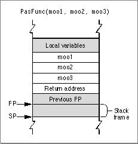

Legacy Document
Important: The information in this document is obsolete and should not be used for new development.
Important: The information in this document is obsolete and should not be used for new development.


Pascal Calling Conventions
When following Pascal calling conventions, the caller passes space for the return value before pushing any parameters. The caller then passes parameters from left to right. For example, given the code
cow = PasFunc(moo1, moo2, moo3);the calling routine first pushes the value ofmoo1onto the stack, followed bymoo2and thenmoo3as shown in Figure 11-2.Figure 11-2 Passing parameters onto the stack in Pascal

Pascal allows only a fixed number of parameters to be passed to the called routine. However, this means the size of the stack frame can be determined at compile time, so the called routine assumes responsibility for deallocating (popping) parameters before returning.
Function values are returned on the stack, as follows:
The calling routine must allocate space on the stack for the return value before pushing any parameters, and the same routine is responsible for popping the result after the call.
- If the value is 4 bytes or smaller in size, the item on the stack is the return value.
- If the return value is larger than 4 bytes, the item on the stack is a pointer to the return value.